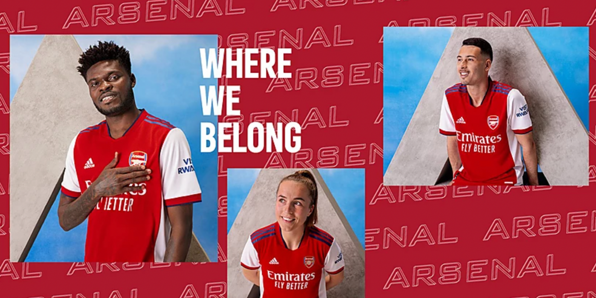
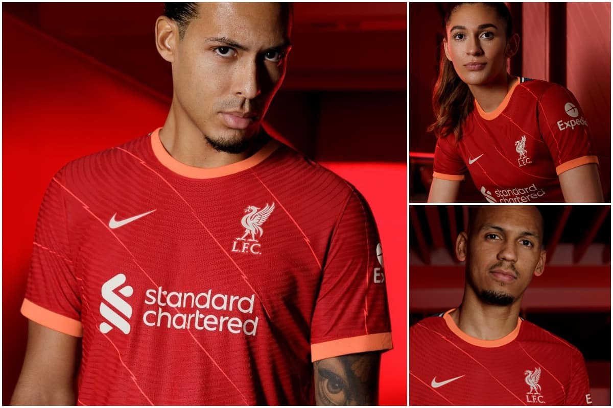
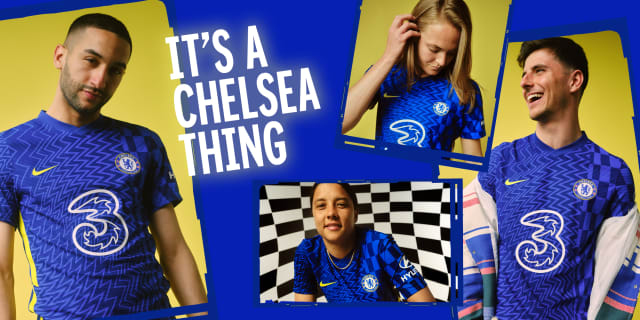
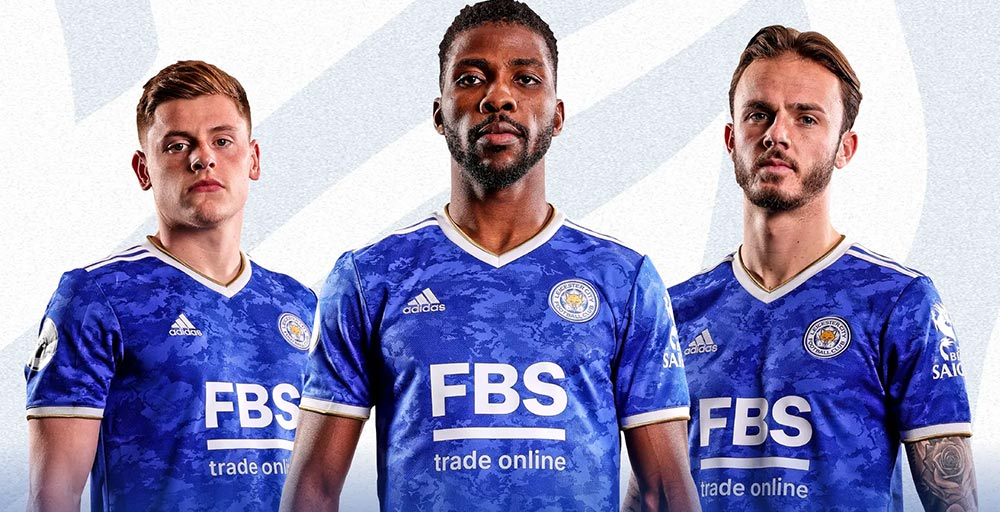

1 / 6

2 / 6

3 / 6

4 / 6
5 / 6

6 / 6

Catch all the weekend action as chelsea, man united drop points by losing their matches, while liverpool held by Brentford on a 3-3 draw. Arsenal register there 3rd victory in a row after winning the North london derby as Spurs lost it's third game in a row, catch all the results by reading more here.
Juve recorded there second win by winning 3-2 againt Sampdoria,Roma lost to Lazio as Napoli win 2 goals to nil againt Cagliari. Barcelona registered a win on sunday with a 3 nil tramphiant victory againt levante. all the weekend results and fixture follow up here www.skysports.com. date: 27/09/2021.
The likes of liverpool,leeds advanced to the next level of carabao cup as united get knocked out by westham with a one goal margin win, Spurs bottled there 2 lead advantage to draw 2-2 with Wolves at full time but managed to qualify after a win on penalties.
With the round four tier confirmed of carabao heres the fixture of round 4 as man city face westham, more fixtures click here. date: 24/09/2021.

de gea saving a last munite penalty against westham.date:20/09/2019.
Man united won there 4th game in premier league on sunday as they were rescured by goalkeeper De gea who saved westham spot kick in last minute. For sports round-up click here for news and click here for fixtures and results.

bayern celebrating after scoring against barca. date:14/09/2021.
A drama at UEFA champions league as man united, Barcelona begins there campaign with a loss. for more info click here.

Matches kick off might be subjected to change.
The full fixture list has been confirmed for the 2021/22 UEFA champions league group stage. Read more.

Ronaldo celebrating after scoring against ireland.Date: 01/09/2021.
Ronaldo has become the highest-scoring men footballer in international football history with 111 goals. The portugal captain entered the world cup qualifier on 109 goals, level with former iranian striker Ali Daei.
36-year-old Ronaldo reached the record breaking tally in 180th game appearance for portugal, after making his international debut in 2003.
Liverpool, Chelsea, Arsenal,Leicester, Man City and Man Utd reveal kits for 2021/22; strips include a 'bolted pinstripe' detail, an 'abstract, kaleidoscopic design', a retro shirt 'ready for the future' and a retro offering inspired by a side that came to be nicknamed 'The Black Watch'